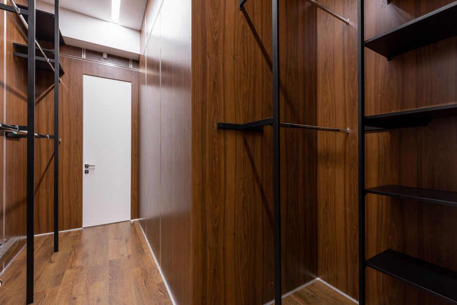

Steps to Install High Wall Shelves for Efficient Space Organization

Photo: gorden murahmalang / Pexels
Wall shelves free up floor space in a small room, but a poorly fastened shelf can fall and hurt someone. Here are the basic steps to install them safely. When in doubt, hire a professional.
1. Plan
Measure the height and depth of what you want to store. Put heavy items (books, dishes) on low or chest-height shelves and keep the top for light things. A shelf that is too high is dangerous to load.
2. Identify your wall
Fasteners depend on the wall: drywall, brick, concrete or wood. They are not interchangeable. In drywall, fasten into wood or metal studs found with a stud finder, or use anchors rated for the planned load.
3. Check what is inside the wall
Before drilling, make sure there are no electrical wires or pipes. A detector that finds cables and pipes helps but does not replace caution. Avoid drilling above outlets and switches or near a bathroom. If unsure, ask an electrician or plumber.
4. Install
- Mark the holes with a level, then drill with the correct bit.
- Wear safety glasses and a dust mask.
- Fasten the brackets following the instructions, with screws and anchors suited to the wall.
- Pull gently on the bracket to check it is solid before loading the shelf.
5. Respect the load
The maximum load stated by the manufacturer assumes correct installation in the right wall. Spread the weight and never overload.
6. Use a stepladder, not a chair
Do not stand on a chair or furniture. Use a stable stepladder on a flat floor, and have someone hold it if you work up high.
7. Maintain
Check twice a year that screws are not loosening and shelves are not sagging. If you have children, also anchor tall bookcases to the wall.
Recommended products
As an Amazon Associate, I earn from qualifying purchases.